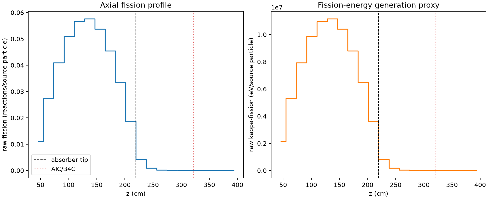
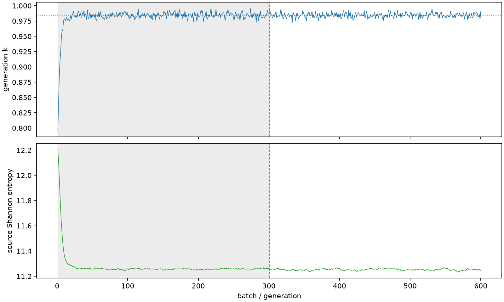

| field | value |
|---|---|
| experiment | V2-STAGE_32_OGRENCI_04-0001 |
| k | 0.9844282827706591 |
| MC standard error | 0.0001680020629304979 |
| seconds | 7847.62102677 |
| acceptance | not_assessed |
| convergence | review_required |
Completed is output integrity only; physical and statistical review required. Zero tallies do not prove zero production or zero uncertainty.
| diagnostic | value |
|---|---|
| geometric fuel voxels | 5280 |
| zero fission tally voxels | 776 |
| low signal fuel voxels | 1677 |
| low signal fission share | 7.265981053460105e-05 |
| low signal kappa share | 7.269712832828279e-05 |
| important fission share | 0.9500688601282629 |
| previous filter included | 3603 |
| duration estimate s | 1562.5173488400023 |
| actual minus estimate s | 6285.1036779299975 |
| fission relative MC error | statistics |
|---|---|
| all_geometric_fuel | {"voxels": 5280, "positive_mean_voxels": 4504, "zero_mean_voxels": 776, "undefined_relative_error_voxels": 776, "median": 0.010532422735929088, "p95": 0.846719493160551, "maximum": 1.0000000000000002} |
| low_signal | {"voxels": 1677, "positive_mean_voxels": 901, "zero_mean_voxels": 776, "undefined_relative_error_voxels": 776, "median": 0.5540814796982945, "p95": 1.0, "maximum": 1.0000000000000002} |
| important_95pct | {"voxels": 2323, "positive_mean_voxels": 2323, "zero_mean_voxels": 0, "undefined_relative_error_voxels": 0, "median": 0.006750417121800124, "p95": 0.010317660033664685, "maximum": 0.012562587975233522} |
| outside_previous_filter | {"voxels": 1677, "positive_mean_voxels": 901, "zero_mean_voxels": 776, "undefined_relative_error_voxels": 776, "median": 0.5540814796982945, "p95": 1.0, "maximum": 1.0000000000000002} |
| kappa_fission relative MC error | statistics |
|---|---|
| all_geometric_fuel | {"voxels": 5280, "positive_mean_voxels": 4504, "zero_mean_voxels": 776, "undefined_relative_error_voxels": 776, "median": 0.010517787794170723, "p95": 0.8481868951749824, "maximum": 1.0000000000000002} |
| low_signal | {"voxels": 1677, "positive_mean_voxels": 901, "zero_mean_voxels": 776, "undefined_relative_error_voxels": 776, "median": 0.5526668716719403, "p95": 1.0, "maximum": 1.0000000000000002} |
| important_95pct | {"voxels": 2323, "positive_mean_voxels": 2323, "zero_mean_voxels": 0, "undefined_relative_error_voxels": 0, "median": 0.006740985459539835, "p95": 0.010303211334265988, "maximum": 0.01254396870967844} |
| outside_previous_filter | {"voxels": 1677, "positive_mean_voxels": 901, "zero_mean_voxels": 776, "undefined_relative_error_voxels": 776, "median": 0.5526668716719403, "p95": 1.0, "maximum": 1.0000000000000002} |
| axial bin | fission share | kappa-fission share |
|---|---|---|
| 1 | 0.02741162650815292 | 0.02741286198548761 |
| 2 | 0.06817420913640451 | 0.06817344057032515 |
| 3 | 0.10194709258584236 | 0.101946027154523 |
| 4 | 0.12724977120791706 | 0.12724888795572645 |
| 5 | 0.1411255895792045 | 0.14112457638225684 |
| 6 | 0.14352267194621018 | 0.14352147594619855 |
| 7 | 0.13392136721041684 | 0.13392037933383794 |
| 8 | 0.11319525603103785 | 0.11319446700840738 |
| 9 | 0.08345273938693613 | 0.08345217029665605 |
| 10 | 0.0465241736191933 | 0.046524490628900385 |
| 11 | 0.010513788722588352 | 0.01051809753340878 |
| 12 | 0.0022999088130385196 | 0.002301011212188152 |
| 13 | 0.0005154058335576013 | 0.0005156430350812625 |
| 14 | 0.00011312476806328803 | 0.000113174149386124 |
| 15 | 2.5822078891114623e-05 | 2.584065569721154e-05 |
| 16 | 6.5448508970385145e-06 | 6.547676715008506e-06 |
| 17 | 7.34490855652293e-07 | 7.353258872084811e-07 |
| 18 | 1.7323079276447096e-07 | 1.731493169962389e-07 |
| 19 | 0.0 | 0.0 |
| 20 | 0.0 | 0.0 |
Histories include the inactive-to-active transition at batch 300. kappa-fission approximates fission energy production, not total heat deposition.

